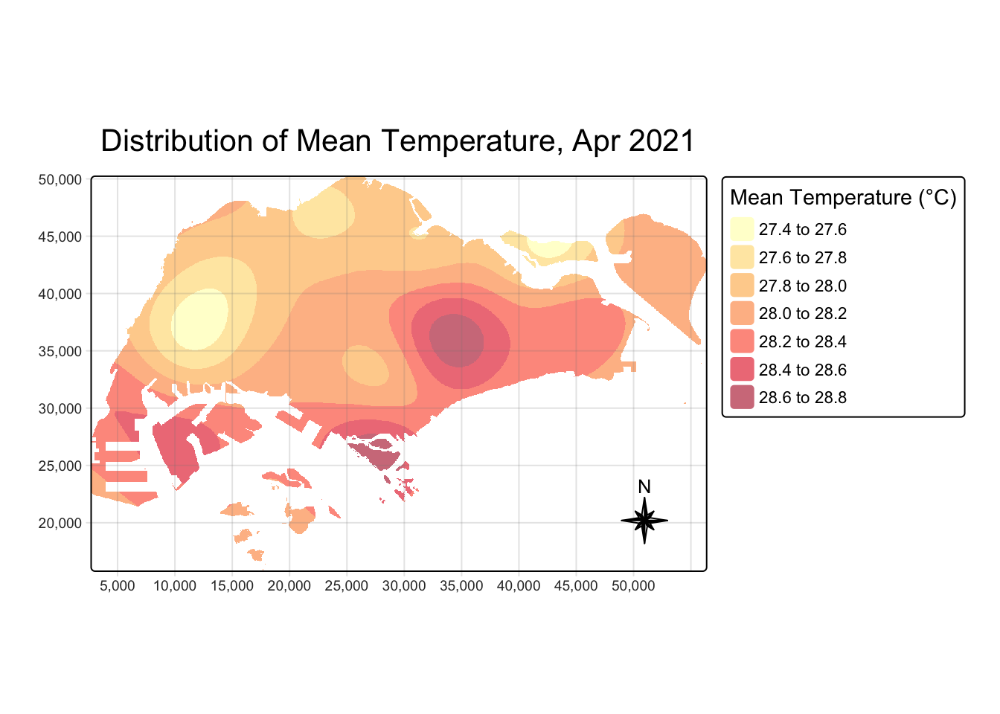
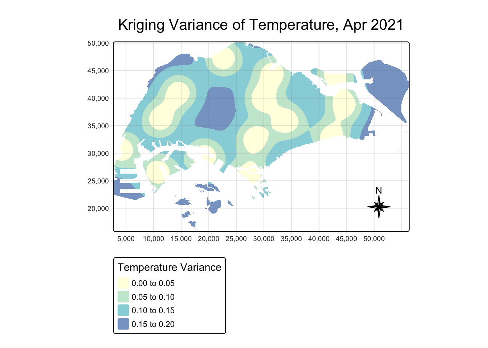
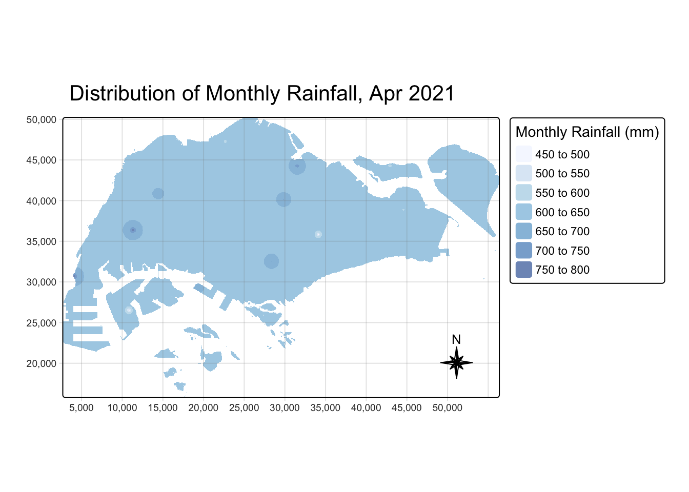
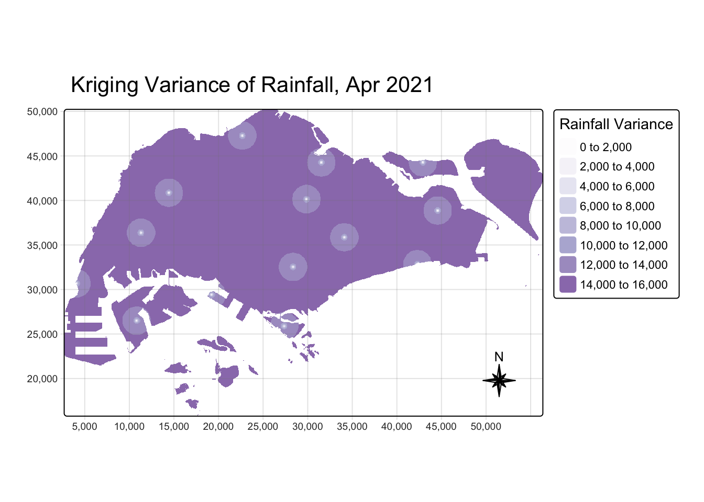
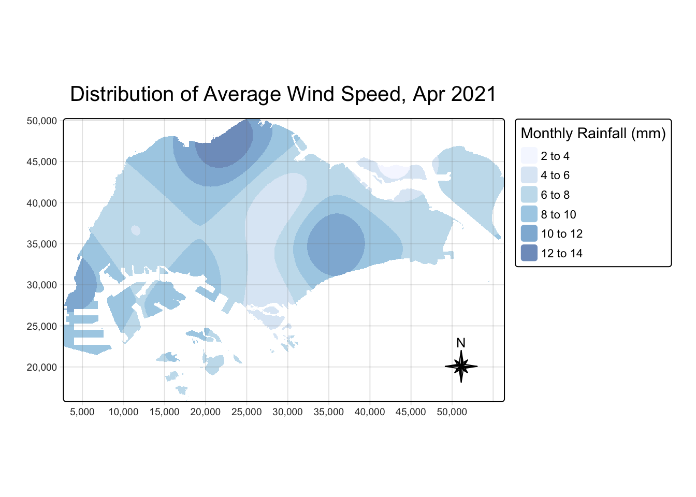
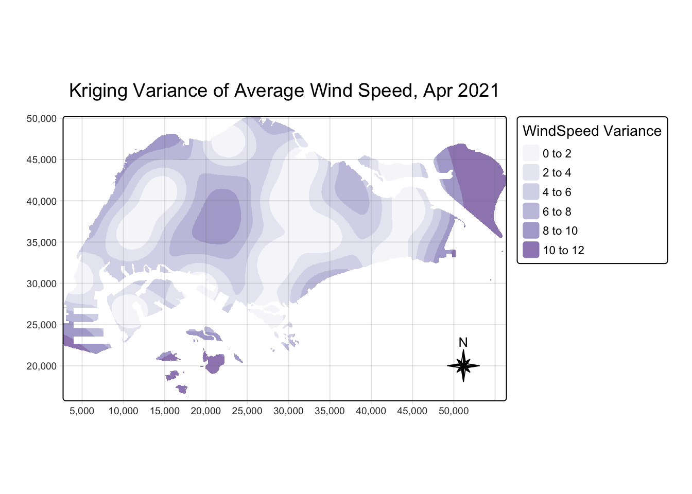
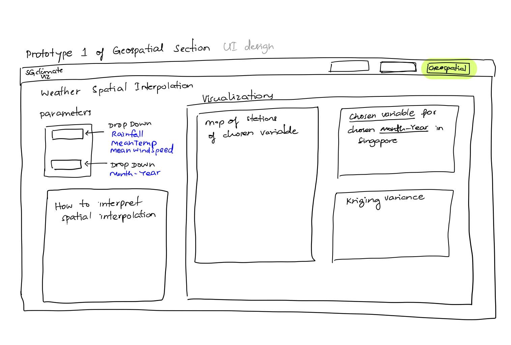

pacman::p_load(tidyverse,SmartEDA,sf,plotly,tmap,terra,gstat,automap,patchwork)Geospatial Prototype for Climate Change in Singapore
1 Overview
1.1 Background
Climate change has become an increasingly pressing issue globally, with significant impacts on temperature, precipitation, and extreme weather events. As a densely populated urban city-state, Singapore faces unique challenges related to climate change, including rising temperatures, increased frequency of heavy rainfall, and shifting wind patterns. These changes can affect public health, infrastructure resilience, and urban sustainability.
With Singapore’s equatorial location, the country already experiences high humidity and relatively stable but warm temperatures throughout the year. Understanding these trends through historical weather data is crucial for identifying climate patterns, assessing potential risks, and formulating adaptation strategies.
1.2 Objectives
The primary objectives of this study are:
To ensure that the necessary R packages required for the Shiny application are compatible with R CRAN and function correctly.
To develop and validate R scripts that produce accurate and meaningful climate analysis outputs.
To define key climate parameters (e.g., temperature trends, rainfall patterns) and determine their relevance for visualization in the Shiny application.
To design and implement an intuitive Shiny user interface that effectively presents climate data and analysis to users.
2 Methodology & R Packages Used
| Package | Explanation |
|---|---|
| tidyverse | to efficiently manipulate and clean data, utilizing functions from packages like dplyr and tidyr for data wrangling |
| SmartEDA | to help summarize dataset by providing insights such as missing values |
| sf | for easy manipulation of spatial objects and performing geospatial analysis |
| plotly | for dynamically exploring climate trends over time |
| terra | |
| gstat |
3 The Dataset
To analyze the impact of climate change on various aspects of daily life in Singapore, we will integrate multiple datasets from different government agencies. Our primary dataset consists of historical weather records obtained from the Meteorological Service Singapore (MSS) website.
3.1 Data Collection Process
The historical daily weather data was scraped from the MSS website using the BeautifulSoup Python package, allowing for automated extraction of climate records over multiple years. This method enabled efficient retrieval of key meteorological parameters, including:
Temperature Trends – Mean, maximum, and minimum daily temperatures to observe long-term warming patterns.
Rainfall Patterns – Daily rainfall measurements to track precipitation trends and extreme weather events.
Wind Speed – Mean and maximum wind speeds to assess changes in wind patterns and their potential effects.
Once scraped, the extracted weather records were cleaned, structured, and combined into a single CSV file using Python. This consolidated dataset was then imported into R Studio for further processing and analysis within the Shiny application.
3.2 Purpose of the Dataset
By analyzing this dataset, we aim to:
Identify significant climate-related trends over time.
Assess seasonal and long-term variations in temperature, rainfall, and wind patterns.
Explore how Singapore’s climate has evolved and its potential implications.
4 Aspatial Data Wrangling
4.1 Importing the Data
weather<- read_csv("data/combined_weather_data.csv")We will see the format of the imported data and check if there are any missing values using ExpData from SmartEDA package.
Complete cases shows us if there are missing values. 100% means there is no missing values.
weather %>%
ExpData(type=1) Descriptions Value
1 Sample size (nrow) 446491
2 No. of variables (ncol) 16
3 No. of numeric/interger variables 3
4 No. of factor variables 0
5 No. of text variables 13
6 No. of logical variables 0
7 No. of identifier variables 0
8 No. of date variables 0
9 No. of zero variance variables (uniform) 0
10 %. of variables having complete cases 25% (4)
11 %. of variables having >0% and <50% missing cases 56.25% (9)
12 %. of variables having >=50% and <90% missing cases 18.75% (3)
13 %. of variables having >=90% missing cases 0% (0)This further break down by variables.
weather %>%
ExpData(type=2) Index Variable_Name Variable_Type Sample_n Missing_Count
1 1 Station character 446491 0
2 2 Year numeric 445641 850
3 3 Month numeric 445641 850
4 4 Day numeric 445641 850
5 5 Daily Rainfall Total (mm) character 446491 0
6 6 Highest 30 min Rainfall (mm) character 173989 272502
7 7 Highest 60 min Rainfall (mm) character 173989 272502
8 8 Highest 120 min Rainfall (mm) character 173989 272502
9 9 Mean Temperature (°C) character 446491 0
10 10 Maximum Temperature (°C) character 446256 235
11 11 Minimum Temperature (°C) character 446244 247
12 12 Mean Wind Speed (km/h) character 446491 0
13 13 Max Wind Speed (km/h) character 446217 274
14 14 Highest 30 Min Rainfall (mm) character 272502 173989
15 15 Highest 60 Min Rainfall (mm) character 272502 173989
16 16 Highest 120 Min Rainfall (mm) character 272502 173989
Per_of_Missing No_of_distinct_values
1 0.000 63
2 0.002 21
3 0.002 12
4 0.002 31
5 0.000 1478
6 0.610 477
7 0.610 609
8 0.610 719
9 0.000 106
10 0.001 159
11 0.001 116
12 0.000 326
13 0.001 576
14 0.390 414
15 0.390 545
16 0.390 6374.2 Renaming Variables
Variable names will be renamed for consistency and ease of analysis. For instance, “Daily Rainfall Total (mm)” will be renamed to “DailyRainfallmm”.
colnames(weather) <- c("Station", "Year", "Month", "Day",
"DailyRainfall", "Highest30minRainfall.x","Highest60minRainfall.x","Highest120minRainfall.x",
"MeanTemperature",
"MaxTemperature", "MinTemperature",
"MeanWindSpeed", "MaxWindSpeed",
"Highest30minRainfall.y","Highest60minRainfall.y","Highest120minRainfall.y")4.3 Date Field
weather <- weather %>%
mutate(
Year = as.numeric(Year),
Month = as.numeric(Month),
Day = as.numeric(Day),
Date = as.Date(paste(Year, Month, Day, sep = "-"), format = "%Y-%m-%d")
)4.4 Merging Columns
The columns Highest30minRainfall.x and Highest30minRainfall.y need to be merged into a single column. Whenever one of these columns has an NA value, the other column will have a valid value, meaning that together they form the complete dataset.
# Merge the columns and replace any remaining NA or "-" with 0
weather <- weather %>%
mutate(
Highest30minRainfall = coalesce(`Highest30minRainfall.x`, `Highest30minRainfall.y`),
Highest60minRainfall = coalesce(`Highest60minRainfall.x`, `Highest60minRainfall.y`),
Highest120minRainfall = coalesce(`Highest120minRainfall.x`, `Highest120minRainfall.y`)
) %>%
# Convert "-" to NA, then replace NA with 0
mutate(
Highest30minRainfall = as.numeric(Highest30minRainfall),
Highest30minRainfall = ifelse(is.na(Highest30minRainfall), 0, Highest30minRainfall),
Highest60minRainfall = as.numeric(Highest60minRainfall),
Highest60minRainfall = ifelse(is.na(Highest60minRainfall), 0, Highest60minRainfall),
Highest120minRainfall = as.numeric(Highest120minRainfall),
Highest120minRainfall = ifelse(is.na(Highest120minRainfall), 0, Highest120minRainfall)
) %>%
# Drop the original columns
select(-c(`Highest30minRainfall.x`, `Highest30minRainfall.y`,
`Highest60minRainfall.x`, `Highest60minRainfall.y`,
`Highest120minRainfall.x`, `Highest120minRainfall.y`))4.5 Converting data type
Upon inspecting the dataset, we observed that certain columns, such as Daily Rainfall Total (mm) and Mean Temperature (°C), were incorrectly classified as character variables instead of numeric. To ensure accurate analysis, these columns will be converted to numeric data types.
# Convert columns 5 to 10 to numeric
weather[, 5:10] <- lapply(weather[, 5:10], function(x) {
as.numeric(x) # Convert to numeric
})4.6 Calculate Columns
weather <- weather %>%
group_by(Station) %>%
mutate(
MonthlyRainfall = sum(DailyRainfall, na.rm = TRUE)
) %>%
ungroup()4.7 Remove rows with no date
weather<- weather[!is.na(weather$Date), ]4.8 Converting aspatial data into geospatial data
stations<- read_csv("data/stations.csv")Left join station longitude/latitude to weather
weather <- stations %>% left_join(weather, by = c("Station"))Convert to sf using sf package. svy21 is the official projected coordinates of Singapore. 3414 is the EPSG code of svy21.
weather_sf <- st_as_sf(weather,
coords = c("Longitude",
"Latitude"),
crs= 4326) %>%
st_transform(crs = 3414)4.9 Extract Data for Geospatial Analysis
4.9.1 Set Timeframe
First we filter the dataset from Janurary 2021 to April 2024 since there are the most data recorded during these months, using the code chunk below.
weather_filtered <- weather_sf %>%
filter((Year > 2021 | (Year == 2021 & Month >= 1)) &
(Year < 2024 | (Year == 2024 & Month <= 4)))4.9.2 Which Month has most extreme weather?
Shiny App Note
For the purpose of this take-home exercise, we will focus on one month. Users will be able to choose different Months and Years in Shiny app.
To see which month is the most interesting to focus on we determine the month with the most extreme weather conditions based on three key factors from our dataframe. We created a new variable to measure the extremeness (‘ExtremeIndex’) by finding the following:
Total Monthly Rainfall → Measures overall precipitation, indicating wet/extreme months.
Mean of Temperature Variance → Measures temperature fluctuations (Max - Min), capturing extreme hot/cold changes.
Max of Highest Wind Speed → Captures the strongest winds, which indicate stormy or extreme conditions.
weather_extreme <- weather %>%
group_by(Year, Month) %>%
summarise(
MonthlyRainfall = sum(DailyRainfall, na.rm = TRUE),
TempVariance = mean(MaxTemperature-MinTemperature, na.rm = TRUE),
MaxWindSpeed = max(MaxWindSpeed, na.rm = TRUE)
) %>%
ungroup() %>%
mutate(ExtremeIndex = scale(MonthlyRainfall) + scale(TempVariance) + scale(MaxWindSpeed))
most_extreme_month <- weather_extreme %>% filter(ExtremeIndex == max(ExtremeIndex))
p <- ggplot(weather_extreme, aes(x = as.Date(paste(Year, Month, "01", sep = "-")), y = ExtremeIndex)) +
geom_line(color = "black", size = 0.5) +
geom_point(aes(text = paste("Month:", Month, Year, "<br>Extreme Index:", round(ExtremeIndex, 2)))) +
labs(title = "Extreme Weather Index Over Time",
x = "Time (Month)",
y = "Extreme Weather Index") +
theme_minimal()
ggplotly(p, tooltip = "text")4.9.3 Data Extraction
We found that April 2021 had the most extreme weather. Therefore, we will extract this month for deeper insights with geospatial analysis ( for the purpose of this take-home exercise).
We keep the stations that has data for all three fields throughout our time-series data.
weather_month <- weather_filtered %>%
filter(Year == 2021, Month == 4) %>%
group_by(Station) %>%
summarise(
MonthlyRainfall = sum(DailyRainfall, na.rm = TRUE),
MonthlyMeanTemp = mean(MeanTemperature, na.rm = TRUE),
MonthlyMeanWindSpeed = mean(MeanWindSpeed, na.rm = TRUE)
) %>%
ungroup()
keepstations <- c("Admiralty", "Ang Mo Kio", "Changi","Choa Chu Kang (South)","East Coast Parkway","Jurong (West)","Jurong Island","Newton","Pasir Panjang","Pulau Ubin","Seletar","Sentosa Island","Tai Seng","Tuas South")
weather_month<- weather_month%>%
filter(Station %in% keepstations)5 Geospatial Data
Import the geospatial data using st_read and then transform it to Singapore’s coordinate reference system (CRS) 3414 using the st_transform function from the sf package.
mpsz2019 <- st_read(dsn = "data/geospatial",
layer = "MPSZ-2019") %>%
st_transform(crs = 3414)Reading layer `MPSZ-2019' from data source
`/Users/seesarhlakyi/Desktop/ssrhk/ISSS608/Take-home_Ex/Take-home_Ex03/data/geospatial'
using driver `ESRI Shapefile'
Simple feature collection with 332 features and 6 fields
Geometry type: MULTIPOLYGON
Dimension: XY
Bounding box: xmin: 103.6057 ymin: 1.158699 xmax: 104.0885 ymax: 1.470775
Geodetic CRS: WGS 846 Spatial Interpolation
Spatial interpolation is a critical technique in geospatial analysis, especially when dealing with unsampled locations. In the case of the SG ClimateViz project, there are many areas where weather stations are missing or sparse, making it impossible to directly obtain weather-related metrics such as monthly rainfall for certain regions. Spatial interpolation allows us to estimate these missing values by leveraging the known data points from nearby locations.
6.1 Data Preparation
We need create a grid data object by using rast() of terra package as shown in the cod chunk below.
grid <- terra::rast(mpsz2019,
nrows = 690,
ncols = 1075)
gridclass : SpatRaster
dimensions : 690, 1075, 1 (nrow, ncol, nlyr)
resolution : 49.98037, 50.01103 (x, y)
extent : 2667.538, 56396.44, 15748.72, 50256.33 (xmin, xmax, ymin, ymax)
coord. ref. : SVY21 / Singapore TM (EPSG:3414) Next, a list called xy will be created by using xyFromCell() of terra package.
xy <- terra::xyFromCell(grid,
1:ncell(grid))
head(xy) x y
[1,] 2692.528 50231.33
[2,] 2742.509 50231.33
[3,] 2792.489 50231.33
[4,] 2842.469 50231.33
[5,] 2892.450 50231.33
[6,] 2942.430 50231.33We will create a data frame called coop with prediction/simulation locations by using the code chunk below.
coop <- st_as_sf(as.data.frame(xy),
coords = c("x", "y"),
crs = st_crs(mpsz2019))
coop <- st_filter(coop, mpsz2019)
head(coop)Simple feature collection with 6 features and 0 fields
Geometry type: POINT
Dimension: XY
Bounding box: xmin: 25883.42 ymin: 50231.33 xmax: 26133.32 ymax: 50231.33
Projected CRS: SVY21 / Singapore TM
geometry
1 POINT (25883.42 50231.33)
2 POINT (25933.4 50231.33)
3 POINT (25983.38 50231.33)
4 POINT (26033.36 50231.33)
5 POINT (26083.34 50231.33)
6 POINT (26133.32 50231.33)6.2 Kriging for Mean Temperature
Kriging is one of several methods that use a limited set of sampled data points to estimate the value of a variable over a continuous spatial field. Since monthly rainfall over Singapore varies across a random spatial field, we will use kriging.
# Kriging for Monthly Mean Temperature
v_temp <- autofitVariogram(MonthlyMeanTemp ~ 1, weather_month)
k_temp <- gstat(formula = MonthlyMeanTemp ~ 1,
model = v_temp$var_model,
data = weather_month)
# Create prediction grid
resp_temp <- predict(k_temp, coop)[using ordinary kriging]# Extract coordinates
resp_temp$x <- st_coordinates(resp_temp)[,1]
resp_temp$y <- st_coordinates(resp_temp)[,2]
resp_temp$pred <- resp_temp$var1.pred
# Kriging Variance
resp_temp$variance <- resp_temp$var1.var
# Create raster layer
kpred_temp <- terra::rasterize(resp_temp, grid, field = "pred")
# Kriging Variance Raster
kpred_temp_variance <- terra::rasterize(resp_temp, grid, field = "variance")tm_check_fix()
tmap_mode("plot")
tm_shape(kpred_temp) +
tm_raster(col_alpha = 0.6,
palette = "YlOrRd",
title = "Mean Temperature (°C)") +
tm_layout(main.title = "Distribution of Mean Temperature, Apr 2021",
frame = TRUE) +
tm_compass(type = "8star", size = 2) +
tm_grid(alpha = 0.2)
tm_shape(kpred_temp_variance) +
tm_raster(col_alpha = 0.6,
palette = "YlGnBu",
title = "Temperature Variance") +
tm_layout(main.title = "Kriging Variance of Temperature, Apr 2021",
frame = TRUE) +
tm_compass(type = "8star", size = 2) +
tm_grid(alpha = 0.2)
6.3 Kriging for Monthly Rainfall
v_rainfall <- autofitVariogram(MonthlyRainfall ~ 1, weather_month)
k_rainfall <- gstat(formula = MonthlyRainfall ~ 1,
model = v_rainfall$var_model,
data = weather_month)
resp_rainfall <- predict(k_rainfall, coop)[using ordinary kriging]resp_rainfall$x <- st_coordinates(resp_rainfall)[,1]
resp_rainfall$y <- st_coordinates(resp_rainfall)[,2]
resp_rainfall$pred <- resp_rainfall$var1.pred
resp_rainfall$variance <- resp_rainfall$var1.var
kpred_rainfall <- terra::rasterize(resp_rainfall, grid, field = "pred")
kpred_rainfall_variance <- terra::rasterize(resp_rainfall, grid, field = "variance")tm_shape(kpred_rainfall) +
tm_raster(col_alpha = 0.6,
palette = "Blues",
title = "Monthly Rainfall (mm)") +
tm_layout(main.title = "Distribution of Monthly Rainfall, Apr 2021",
frame = TRUE) +
tm_compass(type = "8star", size = 2) +
tm_grid(alpha = 0.2)
tm_shape(kpred_rainfall_variance) +
tm_raster(col_alpha = 0.6,
palette = "Purples",
title = "Rainfall Variance") +
tm_layout(main.title = "Kriging Variance of Rainfall, Apr 2021",
frame = TRUE) +
tm_compass(type = "8star", size = 2) +
tm_grid(alpha = 0.2)
6.4 Kriging for Mean Wind Speed
v_wind <- autofitVariogram(MonthlyMeanWindSpeed ~ 1, weather_month)
k_wind <- gstat(formula = MonthlyMeanWindSpeed ~ 1,
model = v_wind$var_model,
data = weather_month)
resp_wind <- predict(k_wind, coop)[using ordinary kriging]resp_wind$x <- st_coordinates(resp_wind)[,1]
resp_wind$y <- st_coordinates(resp_wind)[,2]
resp_wind$pred <- resp_wind$var1.pred
resp_wind$variance <- resp_wind$var1.var
kpred_wind <- terra::rasterize(resp_wind, grid, field = "pred")
kpred_wind_variance <- terra::rasterize(resp_wind, grid, field = "variance")tm_shape(kpred_wind) +
tm_raster(col_alpha = 0.6,
palette = "Blues",
title = "Monthly Rainfall (mm)") +
tm_layout(main.title = "Distribution of Average Wind Speed, Apr 2021",
frame = TRUE) +
tm_compass(type = "8star", size = 2) +
tm_grid(alpha = 0.2)
tm_shape(kpred_wind_variance) +
tm_raster(col_alpha = 0.6,
palette = "Purples",
title = "WindSpeed Variance") +
tm_layout(main.title = "Kriging Variance of Average Wind Speed, Apr 2021",
frame = TRUE) +
tm_compass(type = "8star", size = 2) +
tm_grid(alpha = 0.2)
7 Shiny UI
7.1 Storyboard
The following is the sketch of planned Shiny App user interface
